writeRaster(elev, filename = "data/elev.tif")
writeRaster(clc, filename = "data/clc.tif")12 Modifications de la zone d’étude
12.1 Projections
Pour modifier le système de projection d’un raster, nous pouvons utiliser la fonction project(). Il est alors nécessaire de fournir un modèle et d’indiquer la méthode d’estimation des nouvelles valeurs des cellules.
Le modèle est un nouveau raster sur lequel aligner/projeter les données. Pour construire un modèle, nous utilisons dans un premier temps la fonction project(x, crs). Cette fonction va produire un raster avec une résolution choisie automatiquement. Nous utilisons ensuite la fonction res() (ou dim()) pour ajuster la résolution de ce raster modèle (voir ?project). La fonction project() peut ensuite être réutiliser pour projeter les valeurs dans le modèle, en précisant la méthode d’estimation à utiliser.
Quatre méthodes d’estimation sont disponibles :
- near : plus proche voisin. Méthode rapide et par défaut pour les données qualitatives;
- bilinear : interpolation bilinéaire. Méthode par défaut pour les données quantitatives;
- cubic : interpolation cubique;
- cubicspline : interpolation cubique spline.
library(terra)#> terra 1.7.71elev_raw <- rast("data/elevation.tif")
clc_raw <- rast("data/clc_2018.tif")
# Création d'un modele de raster en 2154
model_proj <- project(x = elev_raw, y = "EPSG:2154")
# Ajustement de la résolution du modèle (100 m)
res(model_proj) <- 100
# Projection dans le modèle
elev <- project(x = elev_raw, y = model_proj, method = "bilinear")
clc <- project(x = clc_raw, y = model_proj, method = "near")
plot(elev, main = "Altitudes - RGF93 v1 / Lambert-93" )
plot(clc, type = "classes", main = "CLC - RGF93 v1 / Lambert-93")
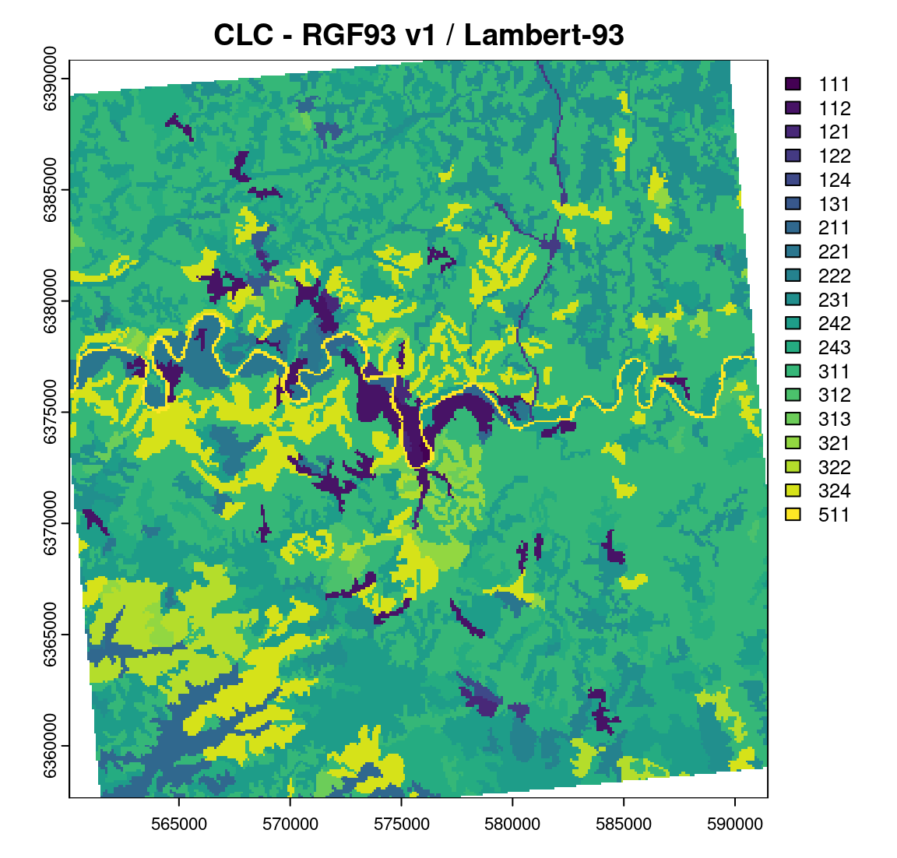
Pour sauvegarder les rasters reprojetés :
12.2 Crop
Le découpage d’un raster en fonction de l’étendue d’un autre objet, SpatVector ou SpatRaster, est réalisable avec la fonction crop().
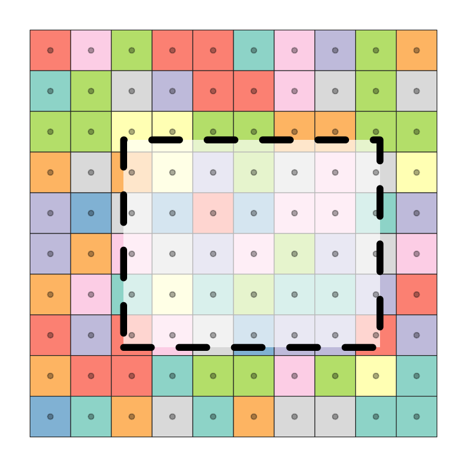
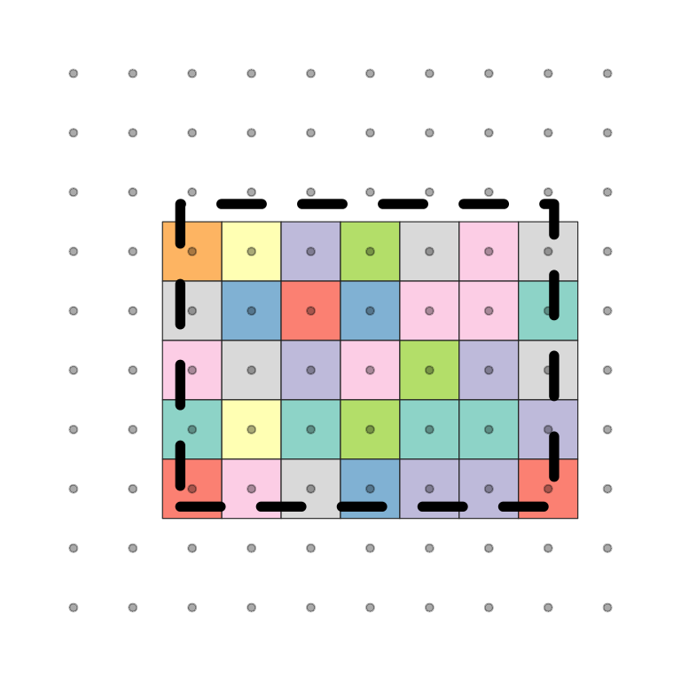
Import de données vectorielles (découpages communaux) avec la fonction vect du package terra. Ces données seront stockées dans un objet SpatVector.
commune <- vect("data/lot.gpkg", layer="communes")Extraction des limites communales de Cahors (code INSEE = 46042).
cahors <- subset(commune, commune$INSEE_COM == "46042") Pour utiliser la fonction crop(), les deux couches de données doivent être dans la même projection.
crop_cahors <- crop(elev, cahors)
plot(crop_cahors)
plot(cahors, add = TRUE)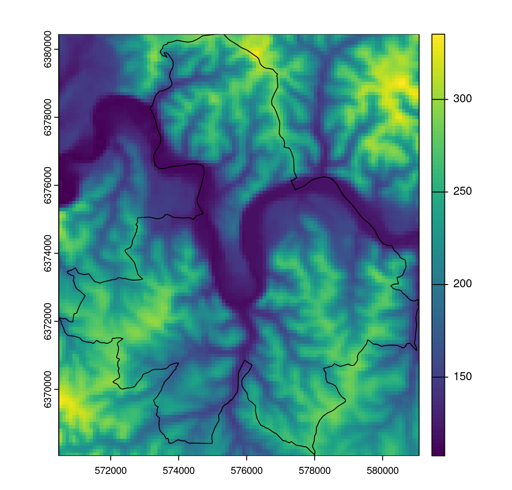
12.3 Mask
Pour afficher uniquement les valeurs d’un raster contenu dans un polygone, utilisez la fonction mask().
Création d’un masque sur le raster crop_cahors en fonction des limites communales (polygone) de cahors :
mask_cahors <- mask(crop_cahors, cahors)
plot(mask_cahors)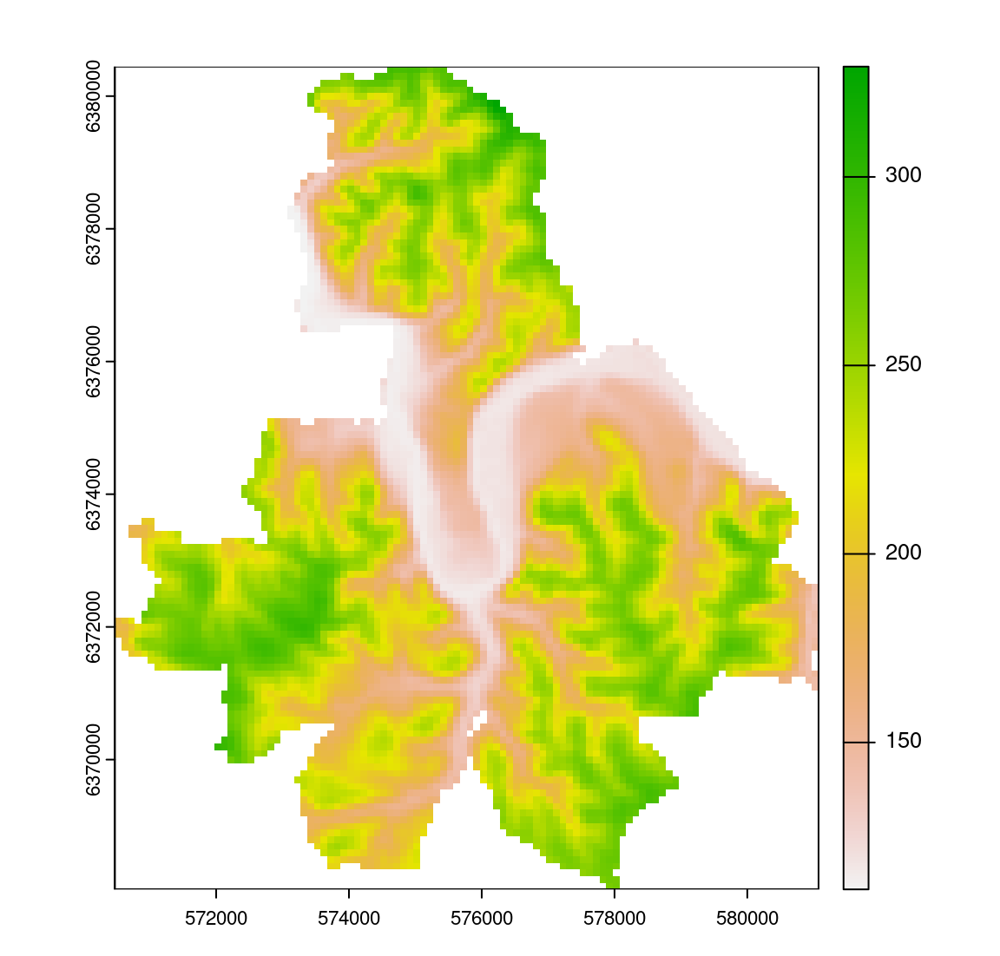
12.4 Agrégation & désagrégation
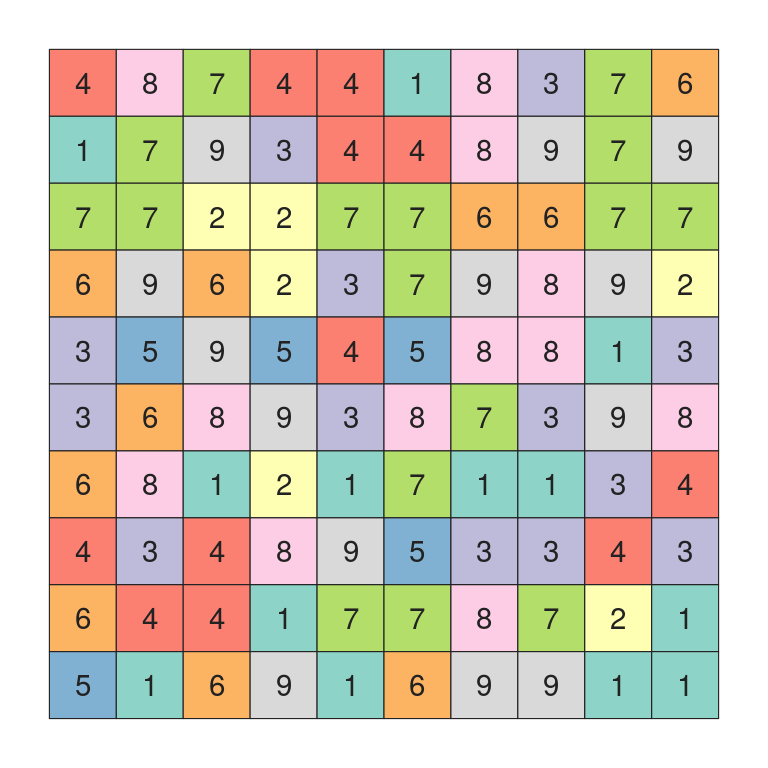
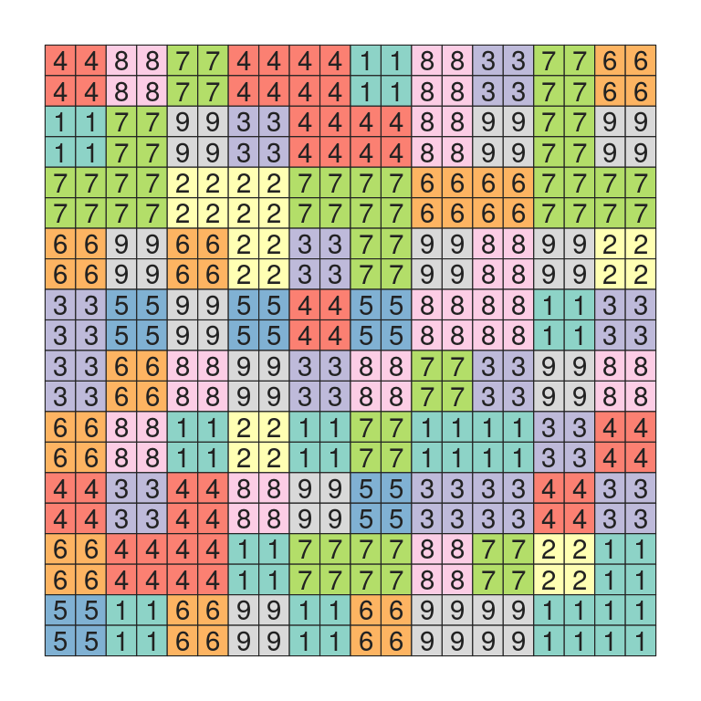
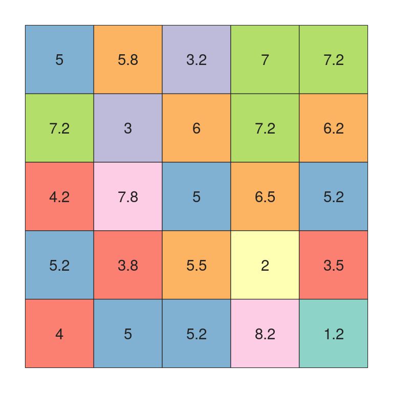
Le ré-échantillonnage d’un raster dans une résolution différente se fait en plusieurs étapes.
- Afficher la résolution d’un raster avec la fonction
res().
res(elev) #> [1] 100 100- Créer une grille de même étendue, puis en diminuer la résolution spatiale (plus grosses cellules).
elev_lower_model <- elev
# Tailles des cellules = 1000 mètres
res(elev_lower_model) <- 1000
elev_lower_model#> class : SpatRaster
#> dimensions : 33, 31, 1 (nrow, ncol, nlyr)
#> resolution : 1000, 1000 (x, y)
#> extent : 560073.1, 591073.1, 6357644, 6390644 (xmin, xmax, ymin, ymax)
#> coord. ref. : RGF93 v1 / Lambert-93 (EPSG:2154)- La fonction
resample()permet de ré-échantillonner les valeurs de départ dans la nouvelle résolution spatiale. Plusieurs méthodes de ré-échantillonnage sont disponibles (voir Section 12.1).
elev_lower <- resample(x = elev,
y = elev_lower_model,
method = "bilinear")
plot(elev_lower,
main = "cellsize = 1000m - ré-échantillonnage bilinéaire")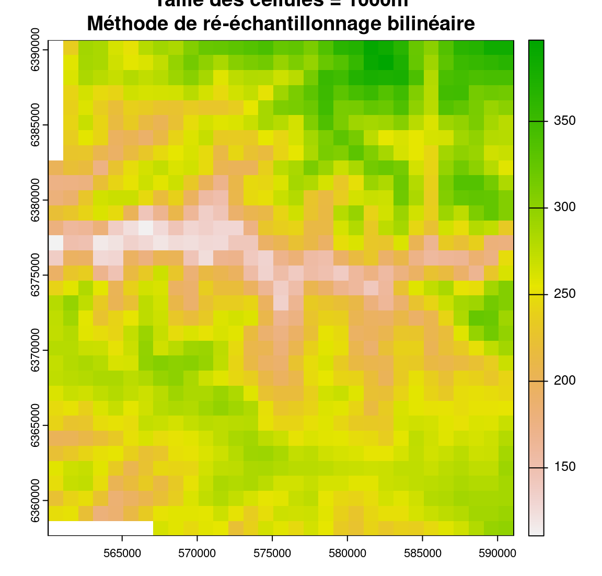
12.5 Fusion de raster
Il est possible de fusionner plusieurs objets SpatRaster en un seul avec merge() ou mosaic().
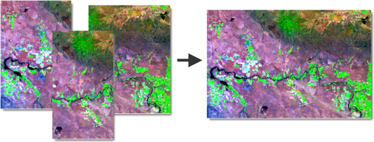
Après un découpage du raster d’élévation par la limite communale de Cahors (voir Section 12.2), nous réalisons la même chose pour la commune limitrophe de Bellefont-La Rauze.
# Extraction des limites communales de Bellefont-La Rauze
bellefont <- subset(commune, commune$INSEE_COM == "46156")
# Découpage du raster d'élévation en fonction des limites de Bellefont-La Rauze
crop_bellefont <- crop(elev, bellefont)Les rasters d’élévation crop_cahors et crop_bellefont se chevauchent spatialement :
plot(crop_cahors, main = "Crop Cahors")
plot(cahors, add = TRUE)
plot(bellefont, add = TRUE)
plot(crop_bellefont, main = "Crop Bellefont-La Rauze")
plot(bellefont, add = TRUE)
plot(cahors, add = TRUE)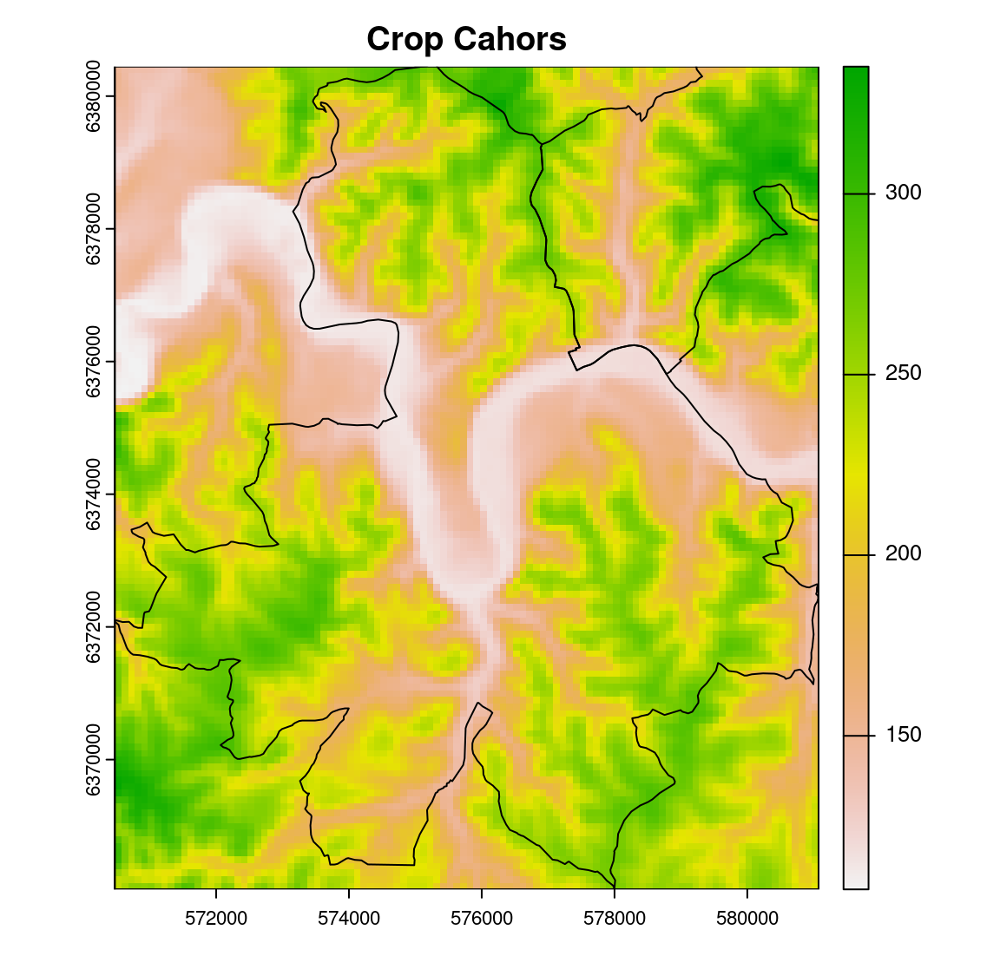

La différence entre les fonctions merge() ou mosaic() concerne les valeurs des cellules qui se superposent. La fonction mosaic() calcule la valeur moyenne tandis que merge() conserve la valeur du premier objet SpatRaster appelé dans la fonction.
# Dans cet exemple, merge() et mosaic() donnent le même résultat
merge_raster <- merge(crop_cahors, crop_bellefont)
mosaic_raster <- mosaic(crop_cahors, crop_bellefont)
plot(merge_raster)
plot(bellefont, add = TRUE)
plot(cahors, add = TRUE)
12.6 Segregate
La fonction segregate()permet de décomposer un raster par valeur (ou modalité) en différentes couches matricielles.
clc_by_class <- segregate(clc, keep = TRUE, other = NA)
plot(clc_by_class)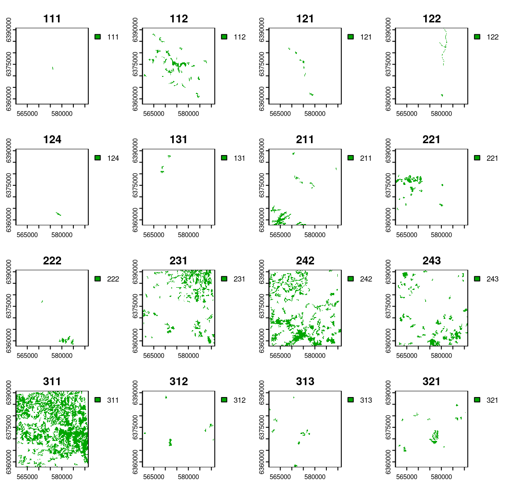